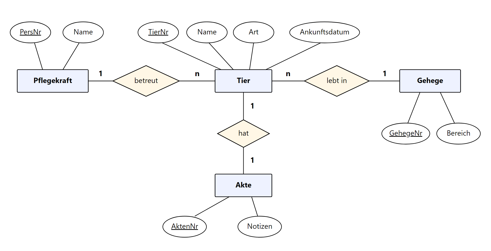
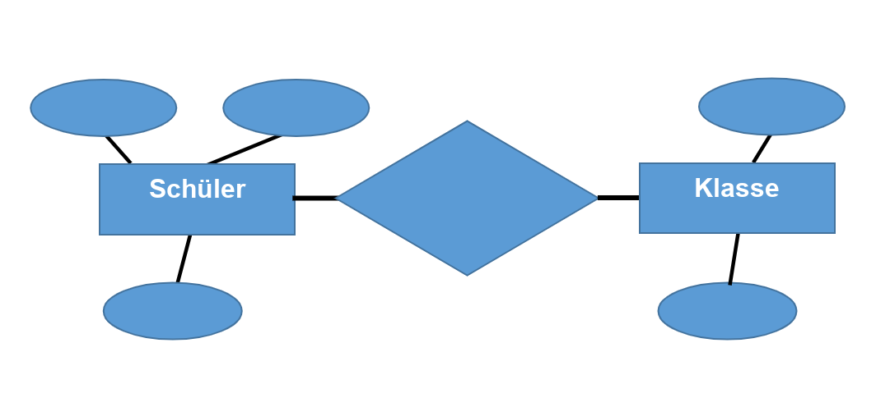

Überblick › LB 9 Datenmanagement
1.10 Das Entity-Relationship-Modell
In der Welt der Datenbanken ist das Entity-Relationship-Modell (ERM) ein fundamentales Konzept, das uns hilft, komplexe Datenstrukturen zu verstehen und zu gestalten. Es kann nicht nur beim relationalen Datenbankmodell verwendet werden, sondern dient auch in anderen Datenbankmodellen als Grundlage für die weitere Entwicklung.
Praxisbezug: Warum Datenmodellierung im echten Leben zählt
Stell dir ein Krankenhaus vor, das seine Patientendaten, Befunde und Termine plant, ohne vorher ein durchdachtes Datenmodell zu erstellen: Verschiedene Abteilungen legen dieselben Informationen doppelt und in unterschiedlichen Formaten ab, Befunde landen nicht rechtzeitig beim richtigen Arzt, und am Ende leidet die Behandlungsqualität. Genau solche Probleme durch fehlende oder schlechte Datenmodellierung – sogenannte Datensilos und veraltete Datenbestände – treten in der Praxis immer wieder auf, zum Beispiel in Krankenhäusern, Banken oder Online-Shops. Ein sauber geplantes ER-Modell verhindert solche Fehler von Anfang an, weil Entitäten, Attribute und Beziehungen einmal klar definiert und mit allen Beteiligten abgestimmt werden, bevor die eigentliche Datenbank gebaut wird.
Berufsfelder: In der IT arbeiten Datenbankdesigner*innen, Softwarearchitekt*innen und Systemanalytiker*innen direkt mit ER-Modellen, wenn sie neue Fachverfahren oder Anwendungen konzipieren. Aber auch außerhalb der klassischen Informatik ist Datenmodellierung relevant: Prozessmanager*innen und Unternehmensberater*innen nutzen ähnliche Modelle, um Geschäftsprozesse und Datenflüsse zu analysieren, und Verwaltungsfachangestellte wirken bei der Einführung oder Anpassung von Fachverfahren (z. B. in Schulverwaltung, Gesundheitswesen oder öffentlicher Verwaltung) mit, indem sie fachliche Anforderungen an die Datenstruktur formulieren.
Weiterlesen: Veraltete Daten und Datensilos im Krankenhaus · Fehlervermeidung bei der Datenmodellierung: Typische Fallstricke und wie man sie vermeidet
Was ist das Entity-Relationship-Modell?
Das ERM ist ein konzeptuelles Modell, das zur Darstellung der Struktur einer Datenbank verwendet wird. Es hilft uns, die wichtigsten Elemente unserer Daten und ihre Beziehungen zueinander zu identifizieren und zu visualisieren, bevor wir sie in eine tatsächliche Datenbank umsetzen.
Hinweis: Bedeutung des ERM für das Datenbankdesign
Das ERM ist mehr als nur ein Diagramm. Es ist ein mächtiges Werkzeug für das Datenbankdesign:
- Es hilft, die Struktur der Daten zu verstehen und zu kommunizieren.
- Es dient als Grundlage für die Erstellung des relationalen Datenbankschemas.
- Es erleichtert die Identifikation von Redundanzen und potenziellen Problemen im Datenbankdesign.
- Es unterstützt die Zusammenarbeit zwischen Datenbankdesigner*innen, Entwickler*innen und Auftraggebern.
Die Bausteine des ERM
1. Entitäten
Entitäten sind die Hauptakteure in unserem Datenmodell. Sie repräsentieren reale oder abstrakte Dinge, über die wir Informationen speichern möchten. In einer Schulverwaltungsdatenbank könnten beispielsweise „Schüler“, „Lehrer“ und „Klasse“ Entitäten sein.
Entitäten werden als Rechtecke dargestellt.
2. Attribute
Attribute sind die Eigenschaften, die eine Entität näher beschreiben. Für die Entität „Schüler“ könnten Attribute wie „Schüler-ID“, „Name“, „Geburtsdatum“ und „Adresse“ relevant sein. Jedes Attribut gibt uns eine spezifische Information über die Entität.
Attribute werden als Ellipsen dargestellt und mit ihrer Entität verbunden. Das Attribut, das einen Datensatz eindeutig identifiziert, heißt Schlüsselattribut und wird unterstrichen.
3. Beziehungen
Beziehungen zeigen, wie Entitäten miteinander in Verbindung stehen. In unserem Schulbeispiel könnte es eine „unterrichtet in“-Beziehung zwischen „Lehrer“ und „Klasse“ geben oder eine „gehört zu“-Beziehung zwischen „Schüler“ und „Klasse“.
Beziehungen werden als Rauten dargestellt und verbinden die beteiligten Entitäten.
Kardinalitäten: Die Quantität der Beziehungen
Ein wichtiger Aspekt von Beziehungen im ERM sind die Kardinalitäten. Sie geben an, wie viele Instanzen einer Entität mit wie vielen Instanzen einer anderen Entität in Beziehung stehen können.
Hinweis: Bestimmung der Kardinalitäten
- Betrachte die Beziehung von links nach rechts: „Wie viele Instanzen der rechten Entität können mit einer Instanz der linken Entität in Beziehung stehen?“
- Betrachte die Beziehung von rechts nach links: „Wie viele Instanzen der linken Entität können mit einer Instanz der rechten Entität in Beziehung stehen?“
- Kombiniere die Ergebnisse zur vollständigen Kardinalität.
- Kardinalitäten werden an den Verbindungslinien zwischen Entitäten und Beziehungen notiert.
Vom Sachtext zum ER-Modell
In der Praxis – und in der Prüfung – bekommst du keine fertigen Entitäten, sondern einen Sachtext: eine Beschreibung dessen, was die Datenbank später leisten soll. Daraus muss das Modell erst herausgelesen werden. Das geht mit vier immer gleichen Schritten.
Die folgenden vier Beispiele sind vollständig durchgearbeitet und werden Schritt für Schritt größer: vom kleinsten sinnvollen Modell bis zu einem Modell mit fünf Beziehungen. In den Sachtexten sind Entitäten gelb, Attribute blau und Kardinalitätsangaben grün hervorgehoben. Auf der Seite 1.11 werden genau dieselben vier Beispiele in Relationenmodelle überführt.
Beispiel 1 einfach
Beispiel 1: Der Schulkiosk 2 Entitäten · 1:n
Ausgangssituation: Der Sachtext beschreibt, was der Kiosk über Lieferanten und Produkte speichern will. Gesucht ist das ER-Modell mit Kardinalität.
Der Schulkiosk kauft seine Ware bei verschiedenen Lieferanten. Zu jedem Lieferanten werden eine Lieferantennummer, der Name und eine Telefonnummer gespeichert. Jedes Produkt hat eine Produktnummer, eine Bezeichnung und einen Verkaufspreis. Jedes Produkt wird von genau einem Lieferanten geliefert; ein Lieferant liefert mehrere Produkte.
| Stelle im Text | Was daraus wird |
|---|---|
| „Lieferanten“, „Produkt“ | zwei Entitäten: Lieferant und Produkt |
| „Lieferantennummer, Name, Telefonnummer“ | Attribute von Lieferant; die Nummer ist eindeutig → Schlüsselattribut LieferantNr |
| „Produktnummer, Bezeichnung, Verkaufspreis“ | Attribute von Produkt; Schlüsselattribut ProduktNr |
| „liefert“ | Beziehung liefert zwischen beiden Entitäten |
| „genau einem Lieferanten“ | an der Seite von Lieferant steht die 1 |
| „mehrere Produkte“ | an der Seite von Produkt steht das n → insgesamt 1:n |
Die beiden Lesesätze zur Probe: Ein Lieferant liefert n Produkte. – Ein Produkt wird von einem Lieferanten geliefert.
- Substantive markieren: „Lieferanten“ und „Produkt“ werden zu Entitäten. Warum? Von beiden gibt es mehrere Exemplare, und zu jedem werden eigene Daten gespeichert.
- Eigenschaften zuordnen: Nummer, Name, Telefonnummer an Lieferant; Nummer, Bezeichnung, Verkaufspreis an Produkt; die Nummern werden unterstrichen. Warum? Diese Angaben beschreiben nur ein Exemplar, die Nummer macht es eindeutig.
- Verb markieren: „geliefert/liefert“ wird zur Raute liefert. Warum? Das Verb verbindet die beiden Entitäten.
- Zahlwörter auswerten: „genau einem Lieferanten“ → 1 an Lieferant, „mehrere Produkte“ → n an Produkt. Warum an diese Seiten? Die Zahl steht an der Entität, von der es so viele geben kann.
Ergebnis: Lieferant (LieferantNr, Name, Telefonnummer) 1 – liefert – n Produkt (ProduktNr, Bezeichnung, Verkaufspreis), siehe Abbildung.

Kontrolle: Alle sechs Attribute aus dem Text kommen genau einmal vor, kein Attribut ist erfunden. Beide Lesesätze passen zur Abbildung. Ein Fremdschlüssel „LieferantNr“ bei Produkt gehört nicht ins ERM – er entsteht erst auf Seite 1.11.
Beispiel 2: Das Tierheim 4 Entitäten · 1:n und 1:1
Ein Tierheim verwaltet seine Tiere. Zu jedem Tier werden eine Tiernummer, der Name, die Tierart und das Ankunftsdatum gespeichert. Jedes Tier lebt in genau einem Gehege, in einem Gehege leben mehrere Tiere; zu einem Gehege werden die Gehegenummer und der Bereich gespeichert. Jede Pflegekraft (Personalnummer, Name) betreut mehrere Tiere, jedes Tier hat aber genau eine feste Bezugsperson. Zu jedem Tier wird außerdem genau eine Akte geführt (Aktennummer, Notizen), und jede Akte gehört zu genau einem Tier.
| Beziehung | Lesesatz hin | Lesesatz zurück | Kardinalität |
|---|---|---|---|
| Pflegekraft betreut Tier | Eine Pflegekraft betreut mehrere Tiere. | Ein Tier hat eine Bezugsperson. | 1:n |
| Tier lebt in Gehege | Ein Tier lebt in einem Gehege. | In einem Gehege leben mehrere Tiere. | n:1 |
| Tier hat Akte | Ein Tier hat eine Akte. | Eine Akte gehört zu einem Tier. | 1:1 |

Hinweis: Woran erkenne ich eine 1:1-Beziehung – und warum ist sie selten?
Eine 1:1-Beziehung liegt vor, wenn beide Lesesätze im Singular stehen: „Ein Tier hat eine Akte“ und „Eine Akte gehört zu einem Tier“. In der Praxis kommt das selten vor, weil man solche Daten meist gleich in eine Entität schreiben könnte. Man trennt sie trotzdem, wenn
- der zweite Teil sehr viele oder sehr große Daten enthält (hier: lange Notizen),
- der zweite Teil nur manchmal existiert oder
- unterschiedliche Personen darauf zugreifen dürfen.
Achtung bei der Formulierung: „Ein Tier hat eine Akte“ heißt nicht automatisch 1:1 – entscheidend ist immer auch der Blick in die Gegenrichtung.
Attribute an Beziehungen
Bisher hingen alle Attribute an Entitäten. Es gibt aber Angaben, die sich keiner der beiden beteiligten Entitäten zuordnen lassen, weil sie erst durch die Kombination der beiden entstehen. Solche Attribute werden an die Raute gehängt.
Beispiel 3: Die Schulmensa 3 Entitäten · m:n mit Beziehungsattribut
Die Schulmensa plant ihre Gerichte. Jedes Gericht hat eine Gerichtnummer, einen Namen und einen Preis. Jedes Gericht gehört zu genau einer Kategorie (Kategorienummer, Bezeichnung, z. B. „vegetarisch“), zu einer Kategorie gehören mehrere Gerichte. Für jedes Gericht wird festgehalten, welche Zutaten (Zutatnummer, Bezeichnung, Einheit) in welcher Menge benötigt werden. Eine Zutat kommt in mehreren Gerichten vor, und ein Gericht besteht aus mehreren Zutaten.
Die spannende Frage ist hier die Menge. Sie kann nicht an Gericht hängen – dann gäbe es pro Gericht nur eine einzige Mengenangabe, egal wie viele Zutaten es hat. Sie kann auch nicht an Zutat hängen – „Mehl: 200 g“ gilt ja nur für ein bestimmtes Gericht. Erst das Paar (Gericht, Zutat) legt die Menge fest, also gehört Menge an die Raute enthält.

Hinweis: Typische Stolperstellen beim Zeichnen
- Beziehung als Entität modelliert. „Anmeldung“ ist hier keine Entität, sondern die Beziehung nimmt teil. Frage zur Prüfung: Gibt es das Ding auch ohne die beiden Partner? Eine Anmeldung ohne Teilnehmer und ohne Workshop ergibt keinen Sinn.
- Kardinalität auf der falschen Seite. Die Zahl steht immer auf der Seite der Entität, von der es so viele geben kann. Sprich beide Lesesätze laut mit.
- Beziehungsattribut an eine Entität gehängt. Wende den Test von oben an.
- Fremdschlüssel schon im ERM eingezeichnet. Im ERM gibt es keine Fremdschlüssel – die entstehen erst beim Übergang zum Relationenmodell (Seite 1.11).
- Attribute erfunden. Modelliere nur, was im Text steht. Zusätzliche Attribute sind Interpretation und in einer Prüfung meist nicht gefragt.
Übergang vom ERM zum Relationenmodell
Das ERM ist der erste Schritt auf dem Weg zu einer funktionierenden Datenbank. Nach der Erstellung des ERM wird es in ein relationales Datenbankschema umgewandelt. Dabei werden Entitäten zu Tabellen, Attribute zu Spalten und Beziehungen werden durch Fremdschlüssel oder separate Tabellen (bei m:n-Beziehungen) dargestellt.
Hinweis: Umwandlung zum Relationenmodell
Hauptschritte der Umwandlung:
- Entitäten zu Tabellen: Jede Entität im ERM wird zu einer Tabelle im Relationenmodell.
- Attribute zu Spalten: Die Attribute einer Entität werden zu Spalten in der entsprechenden Tabelle.
- Primärschlüssel definieren: Für jede Tabelle wird ein Primärschlüssel festgelegt, oft basierend auf dem Schlüsselattribut im ERM.
- Beziehungen umsetzen: Je nach Art der Beziehung im ERM (1:1, 1:n, m:n) werden diese unterschiedlich im Relationenmodell dargestellt.
Umsetzung von Beziehungen:
- 1:1-Beziehungen: Können durch einen Fremdschlüssel in einer der beteiligten Tabellen dargestellt werden.
- 1:n-Beziehungen: Werden durch einen Fremdschlüssel in der Tabelle auf der „n“-Seite umgesetzt.
- m:n-Beziehungen: Erfordern eine separate Verbindungstabelle, die Fremdschlüssel zu beiden beteiligten Tabellen enthält.
Auf der Seite 1.11 „Vom ER-Modell zum Relationenmodell“ werden alle vier Beispiele dieser Seite Schritt für Schritt in fertige Relationenschemata überführt.
Das Wichtigste
Entität: Objekt, über das Daten gespeichert werden, z. B. ein Schüler. Darstellung als Rechteck.
Attribut: Eigenschaft, die eine Entität beschreibt (Ellipse). Das Schlüsselattribut, das jeden Datensatz eindeutig macht, wird unterstrichen.
Beziehung: Verbindung zwischen Entitäten (Raute), meist mit einem Verb benannt.
Kardinalität: gibt an, mit wie vielen Partnern ein Exemplar verbunden sein kann: 1:1, 1:n oder m:n.
Vom Text zum ERM: Substantive werden Entitäten, beschreibende Angaben Attribute, Verben Beziehungen und Zahlwörter Kardinalitäten.
Attribut an der Beziehung: Lässt sich ein Wert nur angeben, wenn man beide Beziehungspartner kennt, gehört er an die Raute. Das kommt fast nur bei m:n-Beziehungen vor.

Zum Nachlesen: Kardinalitäten mit Beispielen und vier Schritte vom Text zum ERM
- 1:1 (Eins-zu-Eins): Jede Instanz der ersten Entität ist mit höchstens einer Instanz der zweiten Entität verbunden und umgekehrt.
Beispiel: Abschlusszeugnis
Ein Schüler bekommt ein Abschlusszeugnis. Ein Abschlusszeugnis gehört zu einem Schüler. - 1:n (Eins-zu-Viele): Eine Instanz der ersten Entität kann mit mehreren Instanzen der zweiten Entität verbunden sein, aber jede Instanz der zweiten Entität ist mit höchstens einer Instanz der ersten Entität verbunden.
Beispiel: Klassen in Sekundarstufe 1
Ein Schüler gehört zu einer Klasse. In einer Klasse sind „n“ Schüler. - m:n (Viele-zu-Viele): Mehrere Instanzen der ersten Entität können mit mehreren Instanzen der zweiten Entität verbunden sein und umgekehrt.
Beispiel: Kurssystem Oberstufe
Zu einem Kurs gehören „n“ Schüler. Ein Schüler gehört zu „m“ Kursen.
Vier Schritte vom Text zum ERM
- Substantive markieren. Alles, wovon es mehrere Exemplare gibt und wozu Daten gespeichert werden, wird zur Entität (Rechteck). Faustregel: Es lässt sich in der Mehrzahl aufzählen – „die Produkte“, „die Tiere“.
- Eigenschaften zuordnen. Alles, was eine Entität nur beschreibt und selbst keine eigenen Daten trägt, wird zum Attribut (Ellipse). Das Attribut, das einen Datensatz eindeutig macht, wird unterstrichen.
- Verben markieren. Wörter wie liefert, betreut, gehört zu, nimmt teil beschreiben die Beziehungen (Rauten) zwischen zwei Entitäten.
- Zahlwörter suchen. Formulierungen wie „genau ein“, „höchstens ein“, „mehrere“, „beliebig viele“ liefern die Kardinalitäten. Lies dazu jede Beziehung als zwei Sätze – einmal von links nach rechts und einmal von rechts nach links.
Der Test für Attribute an Beziehungen: Kann ich den Wert angeben, ohne beide Beziehungspartner zu kennen? Ja → das Attribut gehört an eine der beiden Entitäten. Nein → das Attribut gehört an die Beziehung. Typische Beispiele: die Menge einer Zutat in einem Rezept, die Note einer Schülerin in einem Kurs, das Anmeldedatum zu einer Veranstaltung, die Stückzahl einer Position in einer Bestellung.
Grundaufgaben
Aufgabe 1.10.1: AFB I
- Lies den Text auf diesem Arbeitsblatt (nur im Unterricht) durch und bearbeite die Aufgaben.
- Welche Angaben könnten in den leeren Feldern von Abb. 1 stehen? Füge weitere, passende Attribute hinzu.
Aufgabe 1.10.2: AFB I
Prüfe dein Wissen, indem du die Entitäten, Beziehungen und Attribute richtig zuordnest.
Das kann ich jetzt
Grau steht, was der Lehrplan verlangt, darunter, was das für dieses Thema konkret heißt. Hake einen Punkt ab, wenn er in deinem Hefter zusammengefasst ist und du ihn ohne Hilfe kannst. Wie du ihn zusammenfasst, entscheidest du selbst. Die Haken speichert nur dein Browser.
Lehrplan LB 9 Entity-Relationship-Modell (Anwenden des relationalen Datenmodells)